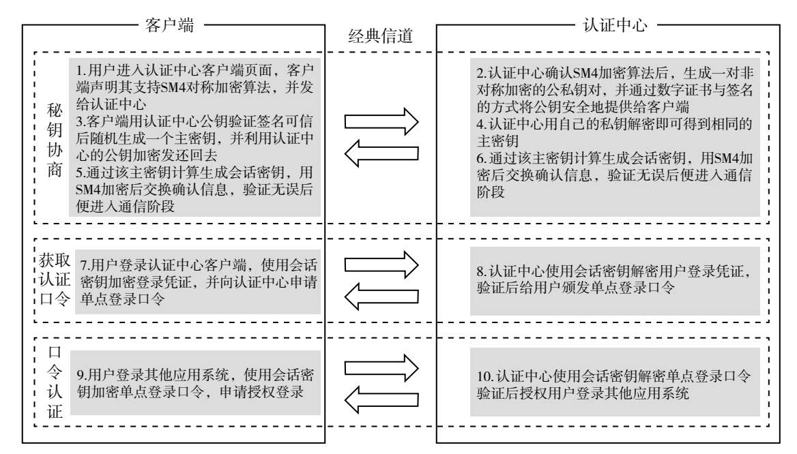
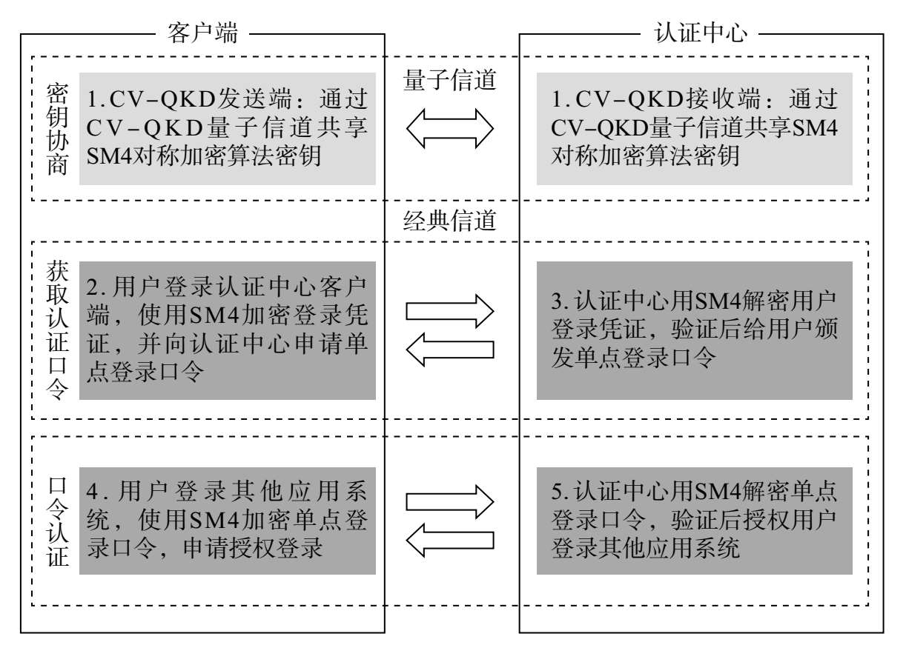
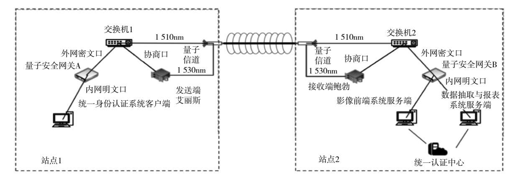

关键词： 量子安全直接通信；连续变量量子密钥分发；数字信贷；用户身份认证；单点登录；产业数字金融
本章目录
一、华夏银行：量子通信在数字信贷场景中的应用探析
在当前量子科技时代的背景下，以肖尔算法、格罗弗算法等量子算法为代表的量子计算技术给经典加密算法带来了巨大挑战，同时，量子保密通信技术的蓬勃发展也为信息安全传输提供了转型升级的机遇，特别是在银行数字化转型的过程中，数据资产的重要性日益凸显。在创新数字信贷业务场景中，企业需要将自身数据传输至银行端，供银行进行分析决策，相关数据往往蕴含了很高的价值，也会涉及企业商业秘密和个人隐私信息，因此数据需要得到高度保护，一旦出现信息泄露，将可能导致企业发生经营损失，甚至造成经营失败等严重后果。综上，银行需要探索新型高度安全的保密通信方法。一方面要探索传统密码算法中的后量子密码的应用，这类密码算法对已有的量子算法是安全的。另一方面要探索受物理定律保障的信息论安全的量子通信新方法，这类方法不仅对已知的破译算法安全，而且对将来任何强大的计算机都是安全的。
本节立足商业银行视角，选取银行数字信贷业务为应用场景，创新性地推动量子安全直接通信技术成果在银行业务领域向实用化、工程化转换，以期为银行数字信贷业务发展提供创新思路，并为该项创新量子技术在金融领域的落地推广提供借鉴。
（一）银行数字信贷创新业务场景
第一，量子安全直接通信可满足产业数字金融模式创新中对核心数据资产安全传输的迫切需求。信贷是银行最基本的一项业务，通过放款收回本金和利息，扣除成本后获得利润；它也是银行最重要的资产业务，是商业银行的主要盈利手段。银行信贷对于社会经济的增长具有积极影响，它可以帮助企业减缓一时的资金压力，也可以助力企业把握时机发展壮大，并带动整个行业和产业的发展，从而形成银行、企业、生态和社会经济多方共赢的良好局面。
当前数字经济环境下，社会经济发展的核心是数字产业化和产业数字化。以银行信贷业务为基础的现代金融服务，也在向产业化和数字化转型升级，逐渐形成产业数字金融全新模式。产业数字金融对商业银行的重要性正攀升至全新的高度，各银行金融机构纷纷积极探索相关业务方向。产业数字金融改变了传统银行业务模式，以数字信息技术为核心，视一条完整供应链中的全部上下游企业为一个整体生态，为链上所有企业提供不依赖于核心企业的去中心化金融服务，并注重在此过程中积累数字资产，挖掘数字价值，创设数字信用，形成数字担保。
然而，产业数字金融需要积累的数字资产情况不同于以往，往往要从合作企业及外围广泛获取数据要素，包括企业、行业、生态、宏观经济等要素。在数字资产积累的过程中，需要企业将自身生产经营数据传输至银行端以支持挖掘数字价值。企业生产经营数据往往蕴含很高的潜在价值，但同时也涉及企业商业秘密和个人隐私信息，这类数据在整个经营周期内均需实施长期严密保护，一旦发生信息泄露，将可能导致企业经营受损，甚至造成经营失败等严重后果，同时也可能会使相关银行陷入因企业信息泄露而导致的法律风险中。因此，安全信息传输和长期安全已成为产业数字金融发展模式的重中之重。
第二，应用量子安全直接通信可在银行和企业之间建立信任，助力产业数字信贷创新业务场景从数字信贷 1.0 模式逐步向 3.0 模式蝶变。工业是立国之本，也是推进供给侧结构性改革的主战场，有效支持工业生产、脱虚向实是产业数字金融的一个重要业务方向。所谓“工欲善其事，必先利其器”，生产工具是生产力的决定性因素，工业设备制造企业往往被视为相关产业生态价值链中的一类核心企业，能够带动下游设备购买和使用方企业发挥生产效能，从而促进整个产业生态良好发展。相关工业设备门类包括但不限于印刷设备、注塑机械、贴片机、数控机床、陶瓷机械、纺织机械、工程机械等。
在工业设备制造与购置的相关产业金融生态环境中，主要参与方有商业银行 B、核心企业 C（设备制造方、卖方）以及下游企业 D（设备使用方、买方）三方。在传统的信贷业务场景中，商业银行 B 大多愿意为核心企业 C 提供信贷服务，而较少惠及下游企业 D。显然，下游企业 D 有很强的信贷资金需求，希望获得商业银行 B 的信贷业务服务；而核心企业 C 也希望商业银行 B 能够惠及其下游企业 D，以扩大核心企业 C 自身的业务发展，并促进整个产业生态的发展。商业银行 B 同意给核心企业 C 的下游企业 D 做信贷业务，但普遍要求 C 为 D 做担保。至此，工业设备按揭贷款成了该业务场景的 1.0 模式。
在工业设备按揭贷款 1.0 模式下，核心企业 C 往往会分别对待不同的下游企业：一是对于最优质的下游企业，C 将它们推介给商业银行 B 并提供担保；二是对于次优质的下游企业，核心企业 C 在将它们推介给商业银行 B 并提供担保的同时，可能还会要求对方将设备抵押反担保给自己；三是通常核心企业 C 会和商业银行 B 一同对下游企业的“设备在不在”“设备坏没坏”进行贷后监控与管理，但对于有些次等的下游企业，或者相关下游企业有可能因传输监控数据发生信息泄露而产生法律纠纷的，核心企业 C 则希望由商业银行 B 直接负责对下游企业的相关设备情况进行贷后监控；四是还有一些下游企业，核心企业 C 可能将其推介给其他金融机构或不提供担保。在此模式下，量子安全直接通信技术可用来解决商业银行 B 对下游企业直接进行“设备在不在”“设备坏没坏”的贷后监控。
在量子安全直接通信技术应用的基础上，基于核心企业 C 愿意为在商业银行 B 做抵押的设备提供全面保修服务，以及愿意最终从商业银行 B 手中足额回收下游企业的押品设备，商业银行 B 则可以为那些同意将设备抵押反担保给核心企业 C 的下游企业直接提供工业设备抵押贷款，即该业务场景的 2.0 模式，从而有效腾挪对核心企业 C 的担保额度的占用，并同时实现不依赖于核心企业的去中心化金融服务。此外，该模式下的金融服务还可以惠及之前核心企业 C 没有提供担保的下游企业。在此模式下，运用量子安全直接通信技术实现了对押品信息以及综合贷后管理信息的全面数字化变革，从而有效积累了数字资产，并为挖掘数字价值做好准备。
在 2.0 模式的基础上，银行正在从“看设备”变革为“看业务”，即从监控下游企业 D 的“设备在不在”“设备坏没坏”转变为考察下游企业 D 的“设备转不转”“设备忙不忙”。如果生产设备持续稳定运转，再辅以下游企业 D 及其下游产生的业务订单、发票、财务、税务等数据要素作为算料，并运用有效的数据挖掘、机器学习智能算法，依托相应的算力设施作为保障，那么可以创设数字信用，形成工业生产数字信用贷款，即该业务场景的 3.0 模式。同时，该数字信用还可以进一步形成数字担保，从而对下游企业 D 的下游产生价值辐射效用，激发新一轮从担保到押品数字化，再到数字信用的蝶变，将价值进一步向产业链上下游两端传递，广泛惠及产业生态，推进产业数字金融业务升级，并有效促进实体经济蓬勃发展。
（二）量子安全直接通信创新技术应用
第一，量子安全直接通信应用功能。鉴于量子安全直接通信技术具备阻止窃听并同时感知窃听、兼容现有光通信网络、无须额外部署加密设施、适合高密级的数据信息传输应用等特点，该技术在商业银行的数据安全传输中具有广阔的应用前景。以产业数字信贷创新业务场景为例，量子安全直接通信可在银行及其企业客户之间实现安全信息传输，在此场景下，将量子安全直接通信设备信息发送端放置于银行企业客户的厂房内，用来监控作为银行贷款押品的生产设备的安全性和完整性；将量子安全直接通信设备信息接收端放置于银行经营机构，用来接收客户厂房设备的监控数据。在实际应用场景中，部署区域分为主动监控机房部署区和监控场景部署区。主动监控机房部署区主要包括量子安全直接通信系统接收端设备、终端显示器和监控处理计算机等设备，监控场景部署区主要包括量子安全直接通信系统发送端设备、终端显示器、以太网接口监控摄像头等设备。量子安全直接通信在银行业务领域的应用功能主要是对需要监控的区域进行动态监控，通过监控目标的姿态变化触发监控摄像头的拍摄功能，并将拍摄后的图片数据在现场接入的计算机系统中转化为协议帧数据，再通过以太网传送给量子安全直接通信系统的发送端设备，而后发送端设备实时将该监控目标姿态变化信息经量子信道传输给量子安全直接通信系统的接收端设备，之后再将该数据通过以太网传送给主动监控机房中的监控处理计算机，监控处理计算机则可以根据监控目标的姿态变化情况及时选择适当的处理方案，至此完成点对点量子安全直接通信系统在银行相关业务领域的应用。
第二，量子安全直接通信应用流程与技术指标。量子安全直接通信系统上线后，首先开展系统各分机设备的初始化工作，初始化工作完成后，进行系统单元检测。若系统运行异常，则进入相应的异常告警及故障处理环节，若系统正常，则进行通信线路的检测。同理，若通信线路运行异常，则进入相应的异常告警及故障处理环节，若通信线路检测无异常，则系统进入功能实现流程。在系统功能实现的过程中，首先启动摄像头拍摄图片的周期传输定时器，根据定时器的设置在主动监控机房部署区和监控场景部署区两地传输信息，主动监控机房部署区的计算机对接收到的信息进行存储和有效处理等工作，经过处理核实后，经确认属于虚警的情况则取消周期连续拍摄数据传输功能，接着执行监控图片数据的量子安全直接通信过程，维持通信线路自检和监控图片数据的接收、存储和处理等过程，至此完成点对点量子安全直接通信在银行相关业务领域的应用流程。
量子安全直接通信监控系统应用技术指标主要包括信息传输最大带宽、信息传输速率、信息传输速率波动、信息传输清晰度、模拟压力测试、模拟攻击测试等。系统在实际应用条件下，通信信息传输最大带宽能够达到 12 kbps，在监控图片数据传输过程中，通信信息平均传输速率为 10 kbps。量子安全直接通信监控系统由于受到机房工作环境和传输光纤信道特性变化的影响，系统的实时通信信息传输速率波动范围为 10 kbps±2 kbps，该波动范围不影响量子安全直接通信系统在应用场景下的数据传输实时性，能够满足实际应用的要求。在系统中摄像头图像分辨率为 1 280×720 像素，满足监控图片数据的清晰度和传输实时性要求。量子安全直接通信监控系统主要考虑应用中的数据量存储要求，系统的模拟压力测试表明，系统能在 7 天×24 小时、30 天×24 小时的长期工作过程中保障图像数据的安全传输和存储要求。量子安全直接通信监控系统在工作过程中监控图像数据的安全传输，主要基于专线光纤的量子信道和经典信道，模拟攻击测试不会对系统监控目标图像数据的传输产生实质性影响。综上所述，量子安全直接通信监控系统满足应用场景稳定运行的要求。
第三，量子安全直接通信应用价值。量子安全直接通信技术的应用给银行业务发展带来了良好的促进作用，实现了可观的价值效益：一是凭借信息传输的高度安全特性，杜绝企业与银行之间可能因数据传输发生信息泄露引发的潜在经营和法律风险，全面助力银行在客户了解的方面实现信息对称性以及对银行客户数据资产的积累；二是在贷后管理相关场景中替代人工，提高贷后管理的频率、效率和效果，杜绝因客户经理可能存在的主观道德风险或客观操作风险造成的银行损失，并避免银行因定期检查押品状态对客户企业日常生产经营造成过度打扰；三是在产业数字金融业务生态环境中，为银行数字信贷创新业务场景从 1.0 模式向 3.0 模式升级提供坚实的基础技术保障与支撑；四是极大地提升商业银行市场形象，通过将最精尖的高科技设备提供给核心客户使用，真正体现银行以客户为中心的理念，让客户将包括数据资产在内的全部资产放心地交给银行来保管，进而提升银行的品牌影响力，带动更大范围的市场经济效益和社会效益。
二、华夏银行：量子通信在身份认证场景中的应用
2025 年 3 月，国务院办公厅发布《关于做好金融“五篇大文章”的指导意见》，强调要“加强数据安全、网络安全、信息科技外包、算法模型、新技术运用等风险管理，推进金融业关键信息基础设施信息技术创新应用”。用户身份认证作为金融相关活动中不可或缺的环节，是防范金融风险的关键技术手段。当前，基于口令、短信验证码、U 盾、生物识别、公开密钥基础设施等技术，金融机构构建了较为完善的用户身份认证体系。其中，公开密钥基础设施的核心在于公钥和数字证书的管理，其通过非对称加密、数字签名和证书验证机制，实现安全通信和身份认证。然而，随着量子计算能力的快速提升，尤其是肖尔算法对 RSA、ECC 等经典密码算法构成潜在威胁，公开密钥基础设施技术体系的安全性面临挑战。在此背景下，连续变量量子密钥分发技术凭借海森伯不确定性原理和实时窃听检测等特性，为金融机构用户身份认证提供了新的技术路径。本节立足我国商业银行应用视角，聚焦信息系统单点登录应用场景，形成基于连续变量量子密钥分发的创新技术方案，为后量子时代金融行业用户身份认证技术发展提供借鉴。
（一）商业银行用户身份认证技术
银行的 IT（信息技术）系统用户一般分为内部客户和外部客户，其中内部客户一般是指银行员工。商业银行用户身份认证技术从认证要素维度来看，主要分为以下四类：一是基于知识要素——“用户名+静态口令/动态口令”的用户身份认证技术，具备部署简便、成本较低的特点，但对抗钓鱼、凭据填充与暴力破解的能力有限，安全性高度依赖口令管理与传输通道安全；二是基于持有物要素——智能卡、“USB Key+PIN”[1]的用户身份认证技术，其私钥受硬件安全边界保护不可导出，具备较强的抗克隆与抗篡改能力，不足之处在于发放、保管与全生命周期管理成本较高，用户体验受物理介质限制，并可能面临驱动兼容、设备丢失或损坏等问题；三是基于生物特征要素——指纹、虹膜、人脸、声纹的用户身份认证技术，具有唯一性与较高便捷性，结合活体检测可有效防范冒用，但易受采集环境与设备质量的影响，同时考虑隐私保护与合规要求需审慎评估，且生物模板一旦泄露，将难以撤销或更换；四是基于公开密钥基础设施的认证——由权威证书授权机构签发数字证书，将用户身份与公钥绑定，支持强身份认证、数字签名与机密性保护，并通过证书链实现可审计、可追溯的双向认证和端到端加密。然而，随着量子技术的快速发展，肖尔算法可高效破解 RSA、ECC 等经典密码算法，并可能对现有公开密钥基础设施体系中基于公私钥的用户身份认证技术产生威胁。用户身份认证作为商业银行（包括系统单点登录在内的诸多场景）的重要技术环节，一旦出现故障或遭遇攻击，将导致依赖该环节的应用系统因访问失效而业务中断，甚至引发数据泄露等衍生风险。因此，有必要引入能够抵抗量子攻击的用户身份认证技术，对现有商业银行用户身份认证环节进行安全升级，而量子密钥分发技术在用户身份认证上的应用成为值得关注的方向。
（二）连续变量量子密钥分发技术
量子密钥分发是一种利用量子力学原理实现安全通信的技术，其核心思想是通过量子态的信息传输，确保通信双方能够生成并共享一个随机的、安全的密钥，用于加密和解密信息。量子密钥分发主要分为离散变量量子密钥分发和连续变量量子密钥分发两类。其中，连续变量量子密钥分发技术是基于量子态的连续变量，如光场的振幅和相位，来对信息进行编码，从而实现密钥的分发。其核心原理是，通过高斯调制将随机数编码于量子态，结合量子态不可克隆定理和海森伯不确定性原理，确保窃听者无法复制或测量量子态。与离散变量量子密钥分发相比，连续变量量子密钥分发采用高斯调制以及平衡零差检测，兼容经典光通信设备，具有低成本、高兼容性的优势。连续变量量子密钥分发技术本身具有量子态不可克隆、实时窃听检测和密钥动态更新机制，使其天然能够抵御量子计算攻击，保障通信安全。
近年来，连续变量量子密钥分发技术的密钥生成速率和传输距离得到了显著提升，且其设备与现有光通信系统兼容，具备良好的部署能力。连续变量量子密钥分发的硬件设备和解决方案逐步进入行业实用领域，并且在金融领域数据安全传输相关场景中得到应用验证。此外，连续变量量子密钥分发技术在用户身份认证领域也展现出良好的可行性，目前已初步形成了两种用户身份认证技术方案。一是将量子密钥分发与经典编码认证相结合，即客户端与认证中心通过连续变量量子密钥分发共享一个安全的二进制密钥串。客户端利用该密钥串作为密码本，将持有的用户身份认证密钥编码为在密码本中的位置索引，形成一个自然数串，并通过公开信道发送给认证中心。认证中心接收后，使用共享密钥串解码该位置信息，恢复出用户身份密钥并进行验证。该方案的核心特点是，将量子安全与经典认证流程分离，认证信息本身不直接暴露在信道中，安全性依赖于量子密钥分发过程所产生的共享密钥串的无条件安全性。二是直接将用户身份信息编码在量子态上的认证方法，即客户端与认证中心预先共享包含私钥（实数串）和认证基（二进制串）的认证密钥。在认证阶段，客户端根据认证基，将私钥信息直接调制到一系列连续变量量子相干态的正则分量上，并通过量子信道发送给认证中心。认证中心使用相同的认证基进行测量，以解码出相关密钥。该方案的核心特点是，通过计算解码相关密钥与原始相关密钥的关联性，并与预设阈值进行比较来完成身份验证，是一种更直接的量子认证方案，其安全性源于任何窃听行为都会干扰量子态，进而导致关联性下降并最终被发现。
（三）商业银行基于用户身份认证技术的单点登录场景
单点登录是一种身份验证和授权机制，旨在让用户只需登录一次，即可访问多个相关但独立的系统或应用，以简化用户身份验证流程，提升用户体验和管理效率。在商业银行传统单点登录流程中，用户身份认证具体分为以下三个步骤（见图 10-1）。

点击放大一是密钥协商。在用户进入认证中心客户端页面后，客户端与认证中心需要先协商出一个对称加密密钥，即会话密钥，后续的数据传输都依赖它来保证安全性。密钥协商过程主要为：客户端声明其支持的加密算法（如国密算法 SM4），认证中心则生成一对非对称加密（如 RSA 或 ECC）的公私钥对，并通过数字证书与签名的方式将公钥安全地提供给客户端；客户端验证证书可信后，随机生成一个主密钥，并利用认证中心的公钥加密发还回去；随后认证中心用自己的私钥解密，即可得到相同的主密钥；之后双方通过该主密钥计算生成会话密钥，加密并交换确认信息，验证无误后便进入通信阶段。
二是获取认证口令。用户在认证中心输入登录凭证，并使用会话密钥加密后传输给认证中心；认证中心收到并验证用户身份成功后，给用户颁发单点登录口令，将口令通过会话密钥加密后传输给客户端。
三是口令认证。用户访问其他业务系统时，无须重复输入登录凭证，仅需提交之前获得的单点登录口令；业务系统将单点登录口令交由认证中心验证其有效性，若验证通过，则授权用户直接登录该系统。
（四）基于连续变量量子密钥分发增强的商业银行单点登录用户身份认证应用研究
本节基于连续变量量子密钥分发与经典编码认证相结合的用户身份认证方案，在最小化进行现有系统改造的前提下，对商业银行传统单点登录流程的密钥协商阶段进行量子化增强，在简化密钥协商步骤的同时，增强了客户端与认证中心之间通信的抗干扰能力和窃听检测能力，可有效抵御未来潜在的量子计算攻击。具体来看，基于连续变量量子密钥分发的单点登录用户身份认证方案主要分为以下三个步骤（见图 10-2）。

点击放大一是密钥协商。客户端与认证中心通过连续变量量子密钥分发量子设备建立量子信道，直接生成并同步共享用于 SM4 对称加密的密钥；与传统基于 RSA 或 ECC 的密钥协商方案不同，该方案不依赖非对称加密算法所基于的复杂数学问题，而是利用量子态的特性，确保密钥生成和分发过程高度安全，可有效抵御潜在的量子计算攻击。
二是获取认证口令。用户在登录认证中心时，使用步骤一生成的 SM4 密钥对登录凭证加密，鉴于该密钥由量子通信设备生成，因此具备更强的“真随机性”；认证中心解密后完成身份验证，并颁发单点登录口令。
三是口令认证。用户访问其他业务系统时，使用步骤一生成的 SM4 密钥对单点登录口令进行加密并提交认证中心，认证中心解密验证身份后完成授权登录。
在实际应用中，连续变量量子密钥分发一次性生成的批量密钥按照顺序逐一使用，每次使用后自动切换至下一组密钥，从而提升了信息安全水平。
基于上述方案，本节将连续变量量子密钥分发设备发送端与接收端，分别部署于华夏银行机房站点 1 和机房站点 2，面向影像前端、数据抽取与报表两个系统与统一身份认证系统之间的用户单点登录场景，开展了实证研究。基于连续变量量子密钥分发增强的单点登录用户身份认证方案网络拓扑如图 10-3 所示。

点击放大实证结果显示，基于连续变量量子密钥分发增强的用户身份认证方案，安全密钥成码率达 507 bps，误帧率仅为 0.917%，交易时延仅增加 0.28 毫秒，系统性能保持稳定，可满足商业银行用户身份认证环节的性能指标要求。该方案不仅显著提升了单点登录环节的安全性与可靠性，也为连续变量量子密钥分发量子安全通信技术在金融领域的实践与推广提供了良好示范。
本节面向商业银行单点登录业务场景，实现了基于连续变量量子密钥分发技术增强的用户身份认证，为金融行业用户身份认证技术发展提供了新的思路。展望未来，随着量子通信设备成本的进一步下降和技术能力的不断提升，连续变量量子密钥分发有望与后量子密码学进一步结合，构建二者相融合的信息安全防御体系，并实现更广泛的应用场景覆盖，为后量子时代金融行业提供更强大的量子安全技术支撑。
三、未来展望
2019 年 10 月 24 日，习近平总书记在中央政治局第十八次集体学习时强调，“要推动协同攻关，加快推进核心技术突破，为区块链应用发展提供安全可控的技术支撑”，“要构建区块链产业生态，加快区块链和人工智能、大数据、物联网等前沿信息技术的深度融合，推动集成创新和融合应用”。2020 年 10 月 16 日，习近平总书记在中央政治局第二十四次集体学习时强调，“加强量子科技发展战略谋划和系统布局，把握大趋势，下好先手棋”。2025 年政府工作报告明确指出，“建立未来产业投入增长机制，培育生物制造、量子科技、具身智能、6G 等未来产业”。区块链和量子科技作为近年来全球最前沿的新兴技术，有望引领新一轮科技革命和产业变革方向，得到全球的极大关注。量子科技发展突飞猛进，量子计算可破解公钥密码算法，给以经典密码学为核心的区块链技术体系带来严重威胁，区块链网络中数据、信息和价值传输亦不再安全，区块链可信体系面临极大挑战。庆幸的是，量子安全直接通信技术作为量子通信研究领域的最新成果，为区块链网络体系抵御量子计算攻击提供了可能，探索量子安全直接通信技术与区块链网络体系融合应用具有积极的现实意义。
量子安全直接通信作为保障信息高度安全传输的重要手段，已在商业银行与企业客户之间的数据交互场景中展现出良好的实用价值。展望未来，随着量子通信技术的进一步成熟和网络基础设施的逐步完善，其应用边界将不断拓展。其中，客户与客户之间的量子通信场景有望成为下一个重要方向。
在数字经济快速发展的背景下，客户之间对高价值数据点对点传输的安全需求日益增长，尤其在供应链协同、合同签署、知识产权传输、数据资产交易等关键业务中，安全可信的直接通信通道将成为构建新型数字金融服务生态的关键基础。未来，商业银行可在现有基础上延伸服务边界，提供基于量子安全直接通信的“客户间加密通道”增值服务，通过为客户构建安全、稳定、可控的量子通信环境，打造以极致安全为核心竞争力的数据服务体系。这不仅有助于提升客户之间交易的效率和信任程度，也将促使银行向数据资产信任中介和科技服务平台升级，从而更好地履行金融资产管理者的职责，开辟量子通信商业化应用的新赛道，推动金融科技向更深层次的融合与智能演进。
[1]USB Key 是一种基于 USB（通用串行总线）接口的硬件设备，内置智能卡芯片或单片机，用于存储用户私钥、数字证书及身份认证信息；PIN 指个人身份识别码。